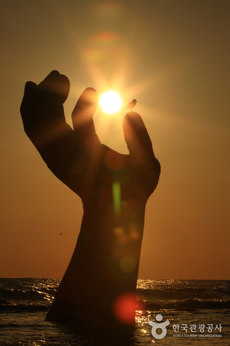

Bogyeong Temple, or Bogyeong-sa in Korean, is a Buddhist temple at the base of Naeyeon Mountain. It is located about 30 kilometers north of Pohang and can be reached via bus from Pohang's intercity bus terminal. The journey takes 45 minutes and costs 1,600 won (about $1.40). The temple is 15 minutes' walk from where the buses from Pohang terminate, and there's a tourist village with souvenir shops, restaurants, and different types of traditional Korean inns called minbak and yeogwon. At the restaurants you can find pajeon which is like a Korean pancake with green onions and seafood in it and is dipped in a spicy soy sauce. Naeyeon mountain has long, winding hiking trails starting from Bogyeong-sa and going all the way to the peak which stands at 930 meters. The well-maintained trail branches off near the temple into a gorge that is lined with waterfalls. It's about 1.5km to the first waterfall, 5m-high Ssangsaeng Pokpo. Pokpo means "waterfall" in Korean. The sixth waterfall, Gwaneum Pokpo, is an impressive 72m and has two columns of water with a cave behind it. The seventh waterfall, about 30m high, is called Yeonsan Pokpo. Further up the trail, the going gets difficult; the ascent of Hyangno-bong (the peak) should only be attempted if the day is young.
 Homigot is one of the easternmost points on the Korean peninsula and as such serves every year as a gathering place for thousands to greet Korea's first sunrise of the New Year. The beach is also home to the Hands of Harmony sculpture and the National Lighthouse Museum. The Hands of Harmony sculpture is actually 2 sculptures. The left hand is on land and the right hand is coming out of the water. At sunrise photos can be taken so that it appears that the hand in the water is holding the sun. Homigot is about 40 minutes from Pohang and can be reached by bus.
Jukdo market is one of the largest traditional markets in the Gyeongsangbuk-do area (on the east coast). Along with the Pohang Jukdo Market, visitors will also find the Jukdo Fish Market, only 500m away from Ogeori (the central intersection of Pohang). The largest open-run market in the east, the seafood wholesale market is made up of over a hundred raw fish stores, offering the area's best catches. Nearby restaurants sell quality sashimi dishes at incredibly low prices. The market is famous nationwide for mulhoe (raw fish in cold broth), served with seasonal catches, and jeonbok juk (abalone rice porridge). In the wintertime visitors can get a taste of gwamegi, a local specialty of the Pohang area which is half-dried mackerel eaten with green onion, brown seaweed, Chinese cabbage, and a spicy sauce.
Yeongildae Beach is the largest beach on the Korean east coast, at over 400,000 m2. It is known as one of the most popular beaches in Pohang, and is located directly inside the city. It is a great place for families and friends during summer vacations. It is conveniently located with plenty of lodgings and amenities such as restaurants offering fresh seafood including sashimi and shellfish. Although the water has been polluted in the past due to its close proximity with the POSCO factory, in recent years the water is significantly cleaner and swimmers can frequently be found there in the summer months.
Juwangsan Mountain (720.6m) is located in the Baekdu Mountain range, on the eastern side of Korea, about 1 hour north of Pohang. The mountain features deep valleys and many sheer rock cliffs to make it the third largest rocky mountain in the country. Juwangsan Mountain was recognized as a tourist attraction on May 30, 1972 and became the 12th national park a few years later on March 30, 1976. The park is quite small, filling in an area of just 105.582km2 but is great for a leisure walk, with walking trails in place along the valleys leading up to waterfalls. In addition to tall rocky peaks, Juwangsan National Park also includes four waterfalls, caves, Daejeonsa Temple and other attractions for a comprehensive tourist site.